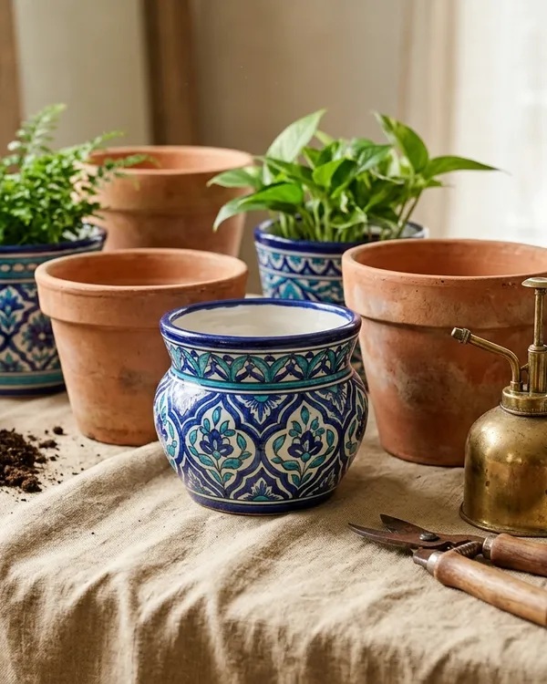
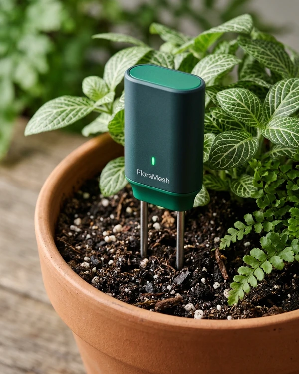

Potohar Clay

Artisan Pottery • Taxila
Taxila Terracotta Breathable Pot Set
Rs 4,800
Rs 5,500
Curated organic palette calibrated for high daylight nursery readability and dark room telemetry immersion. Certified zero-friction file:// execution.
Rooted in the Margalla foothills. We craft precision IoT soil sensors and bespoke architectural planters calibrated for Islamabad and Rawalpindi microclimates.
Hardware Packet Monospace
[NODE: ISB-F7-01] VWC: 64.2% | EC: 1.4 mS/cm | TEMP: 24.8°C | BAT: 98%
55/45 asymmetric layout combining editorial botanical storytelling with live telemetry instrumentation. Space chips dynamically re-target the stage.
Turn balconies, rooftops, and interior living spaces into thriving sanctuaries. Equipped with cellular soil telemetry and Potohar-native botanical arrangements.

Precision 4:5 aspect ratio cards with factual heritage badges, tabular PKR pricing, instant wishlist interaction, and 1-tap quick add.

